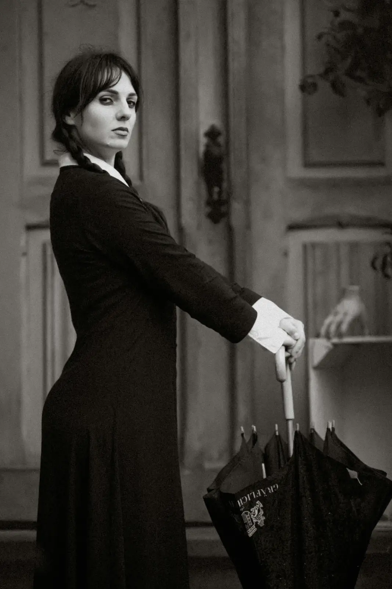

TITLE]A Tale of Two Cities
It was the best of times, it was the worst of times, it was the age of wisdom, it was the age of foolishness, it was the epoch of belief, it was the epoch of incredulity, it was the season of Light, it was the season of Darkness, it was the spring of hope, it was the winter of despair, we had everything before us, we had nothing before us, we were all going direct to Heaven, we were all going direct the other way – in short, the period was so far like the present period, that some of its noisiest authorities insisted on its being received, for good or for evil, in the superlative degree of comparison only.
1893
[TITLE]David Copperfield
Whether I shall turn out to be the hero of my own life, or whether that station will be held by anybody else, these pages must show. To begin my life with the beginning of my life, I record that I was born (as I have been informed and believe) on a Friday, at twelve o’clock at night. It was remarked that the clock began to strike, and I began to cry, simultaneously.
[TITLE]Great Expectations
My father’s family name being Pirrip, and my Christian name Philip, my infant tongue could make of both names nothing longer or more explicit than Pip. So, I called myself Pip, and came to be called Pip. I give Pirrip as my father’s family name on the authority of his tombstone and my sister – Mrs. Joe Gargery, who married the blacksmith. As I never saw my father or my mother, and never saw any likeness of either of them (for their days were long before the days of photographs), my first fancies regarding what they were like, were unreasonably derived from their tombstones.
[TITLE]Oliver Twist
Among other public buildings in a certain town, which for many reasons it will be prudent to refrain from mentioning, and to which I will assign no fictitious name, there is one anciently common to most towns, great or small: to wit, a workhouse; and in this workhouse was born; on a day and date which I need not trouble myself to repeat, inasmuch as it can be of no possible consequence to the reader, in this stage of the business at all events; the item of mortality whose name is prefixed to the head of this chapter.
[TITLE]Bleak House
London. Michaelmas term lately over, and the Lord Chancellor sitting in Lincoln’s Inn Hall. Implacable November weather. As much mud in the streets as if the waters had but newly retired from the face of the earth, and it would not be wonderful to meet a Megalosaurus, forty feet long or so, waddling like an elephantine lizard up Holborn Hill.
[TITLE]The Pickwick Papers
The first ray of light which illumines the gloom, and converts into a dazzling brilliancy that obscurity in which the earlier history of the public career of the immortal Pickwick would appear to be involved, is derived from the perusal of the following entry in the Transactions of the Pickwick Club.
[TITLE]Hard Times
“NOW, what I want is, Facts. Teach these boys and girls nothing but Facts. Facts alone are wanted in life. Plant nothing else, and root out everything else. You can only form the minds of reasoning animals upon Facts: nothing else will ever be of any service to them.”
[TITLE]Martin Chuzzlewit
As no lady or gentleman, with any claims to polite breeding, can possibly sympathise with the Chuzzlewit Family without being first assured of the extreme antiquity of the race, it is a great satisfaction to know that it was in existence in the days of Alfred.
[TITLE]Dombey and Son
Dombey sat in the corner of the darkened room in the great arm-chair by the bedside, and Son lay tucked up warm in a little basket bedstead, carefully disposed on a low settee immediately in front of the fire and close to it, as if his constitution were analogous to that of a muffin, and it was essential to toast him brown while he was very new.
[TITLE]Little Dorrit
Thirty years ago, Marseilles lay burning in the sun, one day. A blazing sun upon a fierce August day was no greater rarity in southern France then, than at any other time before or since. Everything in Marseilles, and about Marseilles, had stared at the fervid sun, and been stared at in return, until a staring habit had become universal there.
[TITLE]Our Mutual Friend
In these times of ours, though concerning the exact year there is no need to be precise, a boat of dirty and disreputable appearance, with two figures in it, floated on the Thames, between Southwark Bridge, which is of iron, and London Bridge, which is of stone, as an autumn evening was closing in.
[TITLE]Barnaby Rudge
In the year 1775, there stood upon the borders of Epping Forest, at a distance of about twelve miles from London, measuring from the Standard in Cornhill, or rather from the spot on or near to which the Standard used to be in days of yore, a house of public entertainment called the Maypole.
[TITLE]The Old Curiosity Shop
Although I am an old man, night is generally my time for walking. In the daytime I often lie upon the grass, and bask in the hot sun. The green earth beneath me, the blue sky above, the rustling trees, the singing birds, the humming insects, the gay butterflies, flitting hither and thither, the light clouds, which pass my view, laden with gentle thoughts, all form a bright and cheery landscape.
[TITLE]The Mystery of Edwin Drood
An ancient English Cathedral Town? How can the ancient English Cathedral town be here! The well-known massive grey square tower of its old Cathedral? How can that be here! There is no spike of rusty iron in the air, between the eye and it, from any point of the real prospect.